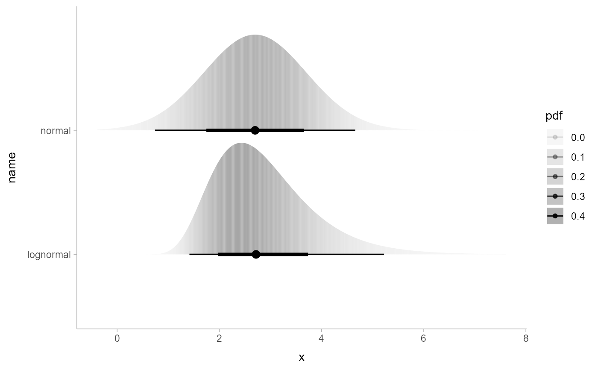
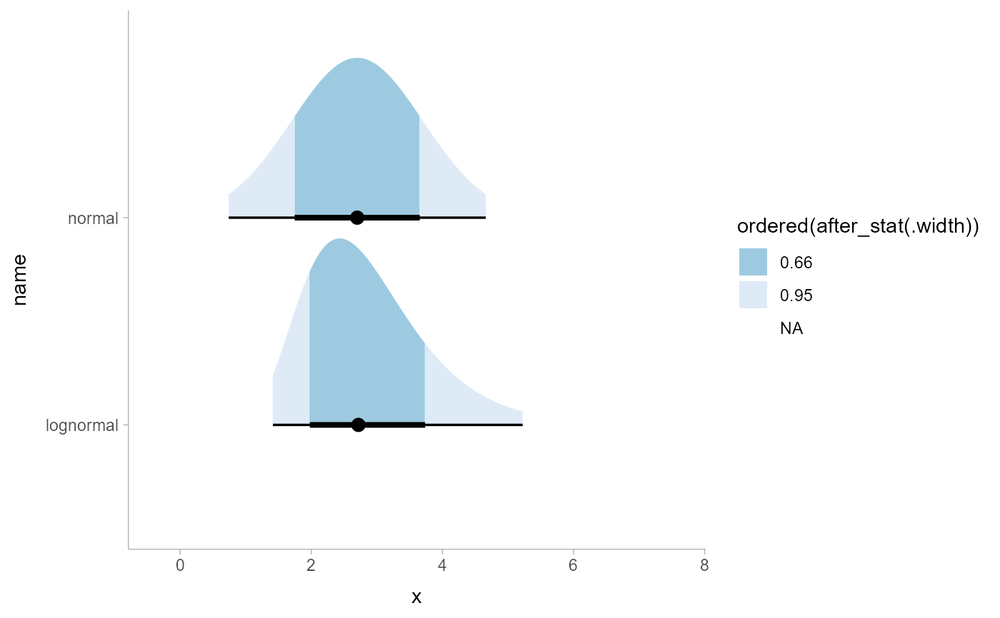
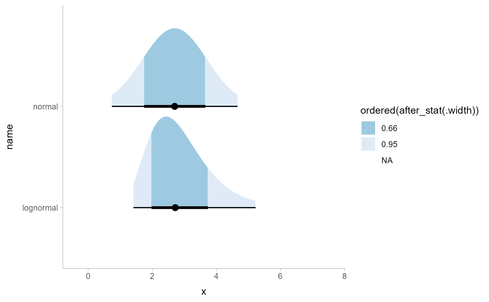

Experimental probability-like expressions that can be used in place of
some after_stat() expressions in aesthetic assignments in ggdist stats.
Arguments
- x
<bare language> Expressions. See Probability expressions, below.
Details
Pr_() and p_() are an experimental mini-language for specifying aesthetic values
based on probabilities and probability densities derived from distributions
supplied to ggdist stats (e.g., in stat_slabinterval(),
stat_dotsinterval(), etc.). They generate expressions that use after_stat()
and the computed variables of the stat (such as cdf and pdf; see e.g.
the Computed Variables section of stat_slabinterval()) to compute
the desired probabilities or densities.
For example, one way to map the density of a distribution onto the alpha
aesthetic of a slab is to use after_stat(pdf):
ggdist probability expressions offer an alternative, equivalent syntax:
Where p_(x) is the probability density function. The use of !! is
necessary to splice the generated expression into the aes() call; for
more information, see quasiquotation.
Probability expressions
Probability expressions consist of a call to Pr_() or p_() containing
a small number of valid combinations of operators and variable names.
Valid variables in probability expressions include:
x,y, orvalue: values along thexoryaxis.valueis the orientation-neutral form.xdist,ydist, ordist: distributions mapped along thexoryaxis.distis the orientation-neutral form.XandYcan also be used as synonyms forxdistandydist.interval: the smallest interval containing the currentx/yvalue.
Pr_() generates expressions for probabilities, e.g. cumulative distribution
functions (CDFs). Valid operators inside Pr_() are:
<,<=,>,>=: generates values of the cumulative distribution function (CDF) or complementary CDF by comparing one of {x,y,value} to one of {xdist,ydist,dist,X,Y}. For example,Pr_(xdist <= x)gives the CDF andPr_(xdist > x)gives the CCDF.%in%: currently can only be used withintervalon the right-hand side: gives the probability of {x,y,value} (left-hand side) being in the smallest interval the stat generated that contains the value; e.g.Pr_(x %in% interval).
p_() generates expressions for probability density functions or probability mass
functions (depending on if the underlying distribution is continuous or
discrete). It currently does not allow any operators in the expression, and
must be passed one of x, y, or value.
See also
The Computed Variables section of stat_slabinterval() (especially
cdf and pdf) and the after_stat() function.
Examples
library(ggplot2)
library(distributional)
df = data.frame(
d = c(dist_normal(2.7, 1), dist_lognormal(1, 1/3)),
name = c("normal", "lognormal")
)
# map density onto alpha of the fill
ggplot(df, aes(y = name, xdist = d)) +
stat_slabinterval(aes(alpha = !!p_(x)))

# map CCDF onto thickness (like stat_ccdfinterval())
ggplot(df, aes(y = name, xdist = d)) +
stat_slabinterval(aes(thickness = !!Pr_(xdist > x)))
 # map containing interval onto fill
ggplot(df, aes(y = name, xdist = d)) +
stat_slabinterval(aes(fill = !!Pr_(x %in% interval)))
# map containing interval onto fill
ggplot(df, aes(y = name, xdist = d)) +
stat_slabinterval(aes(fill = !!Pr_(x %in% interval)))
 # the color scale in the previous example is not great, so turn the
# probability into an ordered factor and adjust the fill scale.
# Though, see also the `level` computed variable in `stat_slabinterval()`,
# which is probably easier to use to create this style of chart.
ggplot(df, aes(y = name, xdist = d)) +
stat_slabinterval(aes(fill = ordered(!!Pr_(x %in% interval)))) +
scale_fill_brewer(direction = -1)

# the color scale in the previous example is not great, so turn the
# probability into an ordered factor and adjust the fill scale.
# Though, see also the `level` computed variable in `stat_slabinterval()`,
# which is probably easier to use to create this style of chart.
ggplot(df, aes(y = name, xdist = d)) +
stat_slabinterval(aes(fill = ordered(!!Pr_(x %in% interval)))) +
scale_fill_brewer(direction = -1)
